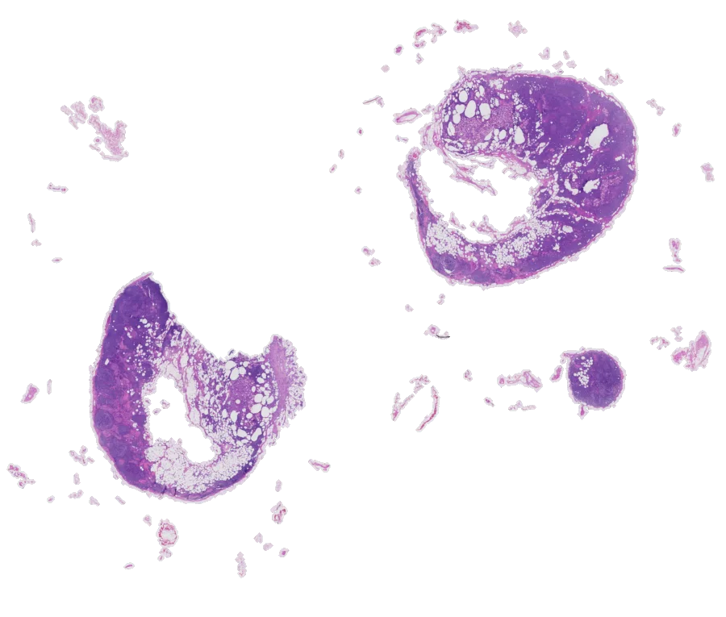
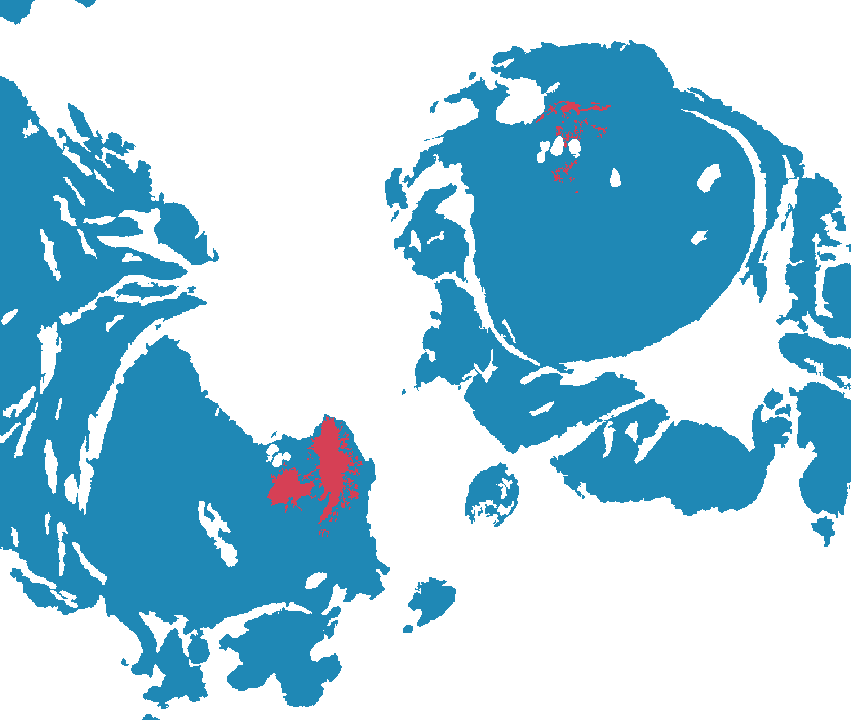
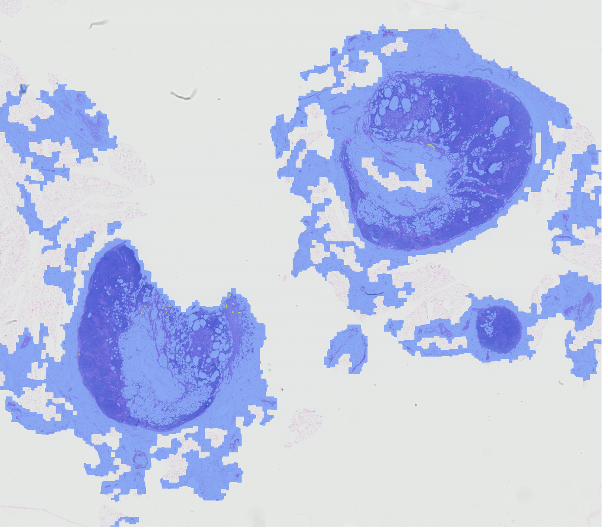

This slide was held out from the tumor_084 fit, but its expert annotation was publicly visible before this rerun. This is retrospective and reference-visible. The source is from the public CAMELYON16 training release, not the hidden challenge test.
Metastasis agreement on official known pixels
Native prediction is primary; shared-support output is secondary on the same 9,081,680 official code-1/2 known-pixel denominator. Code 0 is unscored.
| Measure | Native | Shared support |
|---|---|---|
| Metastasis IoU | 2.3% | 0.7% |
| Dice | 4.4% | 1.5% |
| Balanced accuracy | 51.1% | 50.4% |
| Recall | 2.3% | 0.7% |
| False-positive tissue area | 0.060656 mm² | 0.040160 mm² |
Slide-level presence rule: Bora calls this slide positive because a positive component reaches 0.01 mm². The official reference is positive. The frozen slide-level rule is correct on this positive slide, but the small IoU shows that Bora localized only a small fraction of metastatic pixels.
Tissue and annotation views



Inspect the saved result
Download exact Bora GeoJSON · Download audited score receipt · Official source TIFF. The full source image is hosted by CAMELYON16 and is not redistributed here.
The saved vector is registered to calibrated source pixel edges. The compact overview does not replace exact vector inspection; scored TIFF/BW masks, tissue support and GeoJSON round-trip were independently audited.
Other methods
Class-aware U-Net, DeepLabV3+, U-Net-box-guided MedSAM and fixed-prompt VISTA-PATH remain pending in this tumor_084-only rerun. Earlier tumor_093-fit scores remain separate.